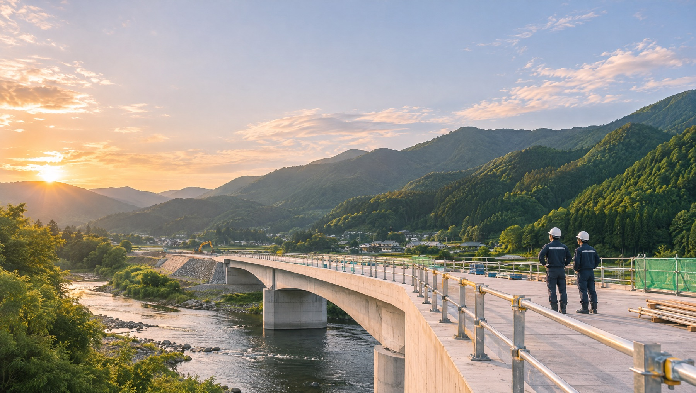

01
土木工事
道路・河川・橋梁などの公共工事。災害のあとの復旧も、いちばんに駆けつけます。

BUILDTHE EVERYDAY
道路、橋、学校、そして家。
1968年から、この町の毎日を支えてきました。
ABOUT US
雨の日も渋滞しない道。地震が来ても揺れに耐える校舎。わたしたちの仕事は、完成したあと、誰も気にしなくなるくらい「あたりまえ」になることがゴールです。
地元の職人と一緒に、設計から施工、完成後の点検まで。半世紀以上、この町だけを見てきた会社だからできる仕事があります。
代表取締役 千景 恒一（架空）
1968
創業
1,280件
施工実績
48名
社員数
32名
施工管理技士
※数字はすべてサンプルです（架空の会社の例）。
BUSINESS
01
道路・河川・橋梁などの公共工事。災害のあとの復旧も、いちばんに駆けつけます。
02
学校・公民館・店舗・工場。地域の人が集まる建物を、設計段階から一緒に考えます。
03
受け継いだ家を、これからも住める家に。古い梁や柱を活かした改修が得意です。
WORKS
土木千景川橋 架け替え工事
建築みなみ地区 公民館 新築工事
土木県道12号 護岸・道路改良工事
リノベ築80年の古民家 再生工事
※実績はすべてサンプルです（写真はAI生成）。
MOVIE
現場の音、職人の手、完成した日の景色。写真だけでは伝わらない仕事の空気を、動画にまとめました。
※サンプルのため、5秒のループ映像だけを入れています（AI生成）。
RECRUIT